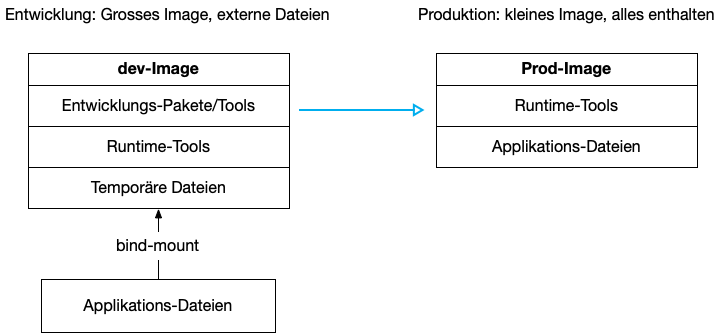

{% extends "../_base_template.html" %}
{% block title %}Lektion 11 - Production Container und Multistage Builds{% endblock %}

{% block sections %}
<section data-markdown>
<textarea data-template>
# <i class="fas fa-graduation-cap"></i> M347 - Produktions-Container erstellen

## Heutiges Ziel

- Sie wissen, wie Sie eine Applikation komplett in einen Container "verpacken"
- Sie können Dockerfiles erstellen, welche Ihre Applikation in mehreren Schritten bildet und startet
- Sie wissen, was "Multistage-Builds" sind und für was sie verwendet werden
- **Endziel**:
  - Sie haben einen Production-Build, welcher Ihre gesamte Frontend-Applikation (inkl. statischer Files) beinhaltet,
    **aber ohne unnötigen Build-Schritt-Artefakte**

</textarea>
</section>

<!-- ----------------------------------------------------------------------------- -->
<section data-markdown>
<textarea data-template>
# <i class="fas fa-graduation-cap"></i> Bis anhin: Entwicklungs-Container

Bis jetzt haben wir unsere(n) Container als Entwicklungs-Werkzeug verwendet. Wir haben unsere Applikation jeweils auch manuell gestartet:

entweder manuell IM Container:

```sh
shell > docker run ..... node:20 bash
docker> npm install       # Pakete installieren
docker> npm run build     # statische Webseite builden
docker> node server.js    # Server starten
```

oder als Kommando beim Erzeugen des Containers:

```sh
shell > docker run ..... frontend-image node server.js
```

Für die Entwicklung unserer Dienste ist dieses Vorgehen akzeptabel, ja sogar einfacher / besser, um allfällige Entwicklungs-
Zwischenschritte ausführen zu können: Ich kann so lokal Dateien ändern, und dies ist sofort im Container reflektiert.

**<i class="far fa-hand-point-right"></i> Wenn unsere Seite (Frontend) aber mal fertig ist, wollen wir das nicht mehr:**

1. Ich möchte ein möglichst schlankes Image: Ich benötige darin z.B. kein Build-System für die Webseite mehr: Ich möchte nur noch die statischen Seiten ausliefern.
2. Ich möchte ein Image, welches möglichst die **gesamte Applikation** bereits beinhaltet, OHNE dass ich die Ressourcen von extern anbinden muss: Ich muss die Seite nicht mehr editieren.
3. Ich möchte das "Bauen" des Produktions-Images möglichst automatisieren (Wiederholbarkeit)
4. Ich möchte in einem Produktionsbetrieb meinen Frontend-Container möglichst einfach, z.b. so, starten können:

```sh
shell > docker run -p 80:3000 frontend-image
```

--&gt; in diesem Beispiel wird KEIN externes Volume mehr angehängt, da die Daten bereits IM Image sind!
</textarea>
</section>

<section data-markdown>
<textarea data-template>
# <i class="fas fa-graduation-cap"></i> Produktions-Images mit "Multistage Builds"



Wir möchten also unsere Frontend-Applikation möglichst schlank und "selbst-genügsam" verpacken. Das Vorgehen dazu ist folgendes:

1. **Bilden der Applikation** (in unserem Fall: Bilden der statischen Webseite aus Templates, falls noch notwendig):<br>
   Wir bauen ein Hilfs-Image, welches mit unseren Entwickler-Tools unsere Applikation fertig baut (statische Seiten generiert)
2. **Bilden eines minimalen Produktions-Images**:<br>
   Aus dem Ergebnis des ersten Schritts bauen wir das finale Produktions-Image

Hier hilft uns Docker mit so genannten **Multistage-Builds**: Ein finales Image wird aus mehreren Teilschritten, aus mehreren
Containern, "zusammengebaut". (Siehe <https://docs.docker.com/develop/develop-images/multistage-build/>)

<i class="far fa-hand-point-right"></i> **Ziel:** Wir wollen unseren Frontend-Service in ein selbständig laufendes, fertiges Image verpacken.

</textarea>
</section>

<section data-markdown>
<textarea data-template>
# <i class="fas fa-graduation-cap"></i> Produktions-Images mit "Multistage Builds"

Ein "Multistage-Build" wird in einem einzigen `Dockerfile` umgesetzt, und funktioniert grundsätzlich so:

(Achtung, dies ist nur ein BEISPIEL!!)

```Dockerfile
# Wir benennen unsere erste "Phase", hier stage1
FROM node:20 AS stage1
COPY lokale/websiten/files/ /build/
RUN npm install             # wenn notwendig
# Hier bilden wir die statischen Files der Webseite:
RUN mein-build-kommando-1
RUN mein-build-kommando-2
RUN builde-meine-webseite
...
#-------------------------------------------------------------------------
# Nun beginnt die 2. Phase, das nächste Image: Hier haben wir Zugriff auf
# das erste Image:
FROM node:20-alpine AS finalStage

WORKDIR /app

# Hier können wir auf die Files aus der stage1 zugreifen:
# Wir kopieren die fertigen statischen Files aus dem ersten Image:
COPY --from=stage1 /build/site/ site/
COPY --from=stage1 /build/server.js server.js
COPY --from=stage1 /build/config.js config.js
# ... und kopieren ev. benötigte Dateien aus dem lokalen Ordner in das Image:
COPY package-production.json /site/package.json

# notwendige Build-Schritte ausführen:
RUN npm install --production

# nun definieren wir die Startparameter für unser Image:
EXPOSE 3000                    # automatisch exponierter TCP-Port
CMD mein-run-commmand          # ... und dieses Kommando beim Container-Start ausgeführt
```

Auch das Bilden des Images läuft genau gleich ab:

```sh
shell> docker build -t prod-image pfad/zum/dockerfile/
```
</textarea>
</section>

<section data-markdown>
<textarea data-template>
# <i class="fas fa-flask"></i> Produktions-Image: Nun sind Sie dran!

**Aufgabe:** Erstellen Sie ein Produktions-Image mit einem Multistage-Dockerfile für Ihren Frontend-Dienst:

Erzeugen Sie ein Dockerfile mit 2 Phasen:

1. in der **ersten Phase** erzeugen / bauen Sie Ihre statische Seite, wenn notwendig, wie gewohnt (npm install, 11ty-Build)<br>
   Ev. ist dies nicht mehr notwendig, wenn Sie bereits eine (fertige) statische Seite haben.
2. in der **zweiten Phase** erstellen Sie ein Produktions-Image, ein minimales, lauffähiges Image: Mit minimal ist gemeint:
  - das Image beinhaltet nur noch die notwendigen Files, Pakete, ....
  - das betrifft z.B. auch die NodeJS-Pakete, welche Sie zur Laufzeit nicht mehr benötigen:<br>
    Zur Laufzeit ist KEIN 11ty mehr notwendig
  - Das erreichen Sie mit einem **separaten package.json**, welches NUR die für die fertige Seite notwendigen Pakete enthält:
    Kopieren Sie ein modifiziertes package.json-File in das Image, bevor Sie dann `npm install --production` ausführen. 
    

**Ziele:**

- Das Bauen Ihres Images soll mit einem einzigen Kommando erfolgen (ein Dockerfile)
- Das fertige Image soll die gesamte Applikation beinhalten, **also kein externes Volume mehr benötigen: Alle Files sind Teil des Images.**
- **Der letzte Build-Stage soll das Image so klein wie möglich behalten**: Nur noch Notwendiges wird installiert, und von früheren Build-States kopiert.
- Das Starten soll ohne Zuweisung von Volumes auskommen, und auch kein Kommando definieren müssen:<br>
```sh
#  (-P mappt die im Dockerfile angegebenen Ports auf zufällige externe Ports):
shell> docker run -d --name prod-frontend -P prod-frontend-image
```
- Dieses Dockerfile können Sie auch in Ihr **Docker Compose-File** Einbauen und so eine
  Produktionsumgebung konfigurieren.

</textarea>
</section>

<section data-markdown>
<textarea data-template>
# <i class="fas fa-flask"></i> Produktions-Image: Zusammenfassung

## Multistage-Builds

* **Multistage-Builds** ermöglichen uns, ein finales Image in mehreren Schritten zu erstellen.
* Dabei beinhaltet das finale Image nur noch die notwendigen Files, ohne temporäre Build-Schritt-Artefakte
* Ziel ist dabei ein möglichst schlankes finales Image, welches alles beinhaltet, um die Applikation zu starten.

</textarea>
</section>

<section data-markdown>
<textarea data-template>
# <i class="fas fa-flask"></i> Nächste Lektionen - LB 1 und Projektarbeit

## Wissensprüfung LB 1

* Nächste Lektion: **Wissensprüfung** als Moodle-Prüfung. Themen:
  * Container-Konzepte (theoretisches Wissen)
  * Container-Kommandos (praktisches Anwenden)
  * Container-Dienst aufbauen (eigenen Dienst nach Vorgabe implementieren)

## Projektarbeit, 4x2 Lektionen

Siehe **Dokumentation** auf Moodle (Aufgabenstellung Projektarbeit - LBV M347-1)

**Abgabe des Projektes erfolgt als zip-File auf Moodle!**

**Abgabedatum**: **Donnerstag abend**, 26.06.2025, 23:59 (zip in Abgabe-Aufgabe hochgeladen)
</textarea>
</section>
{% endblock %}
